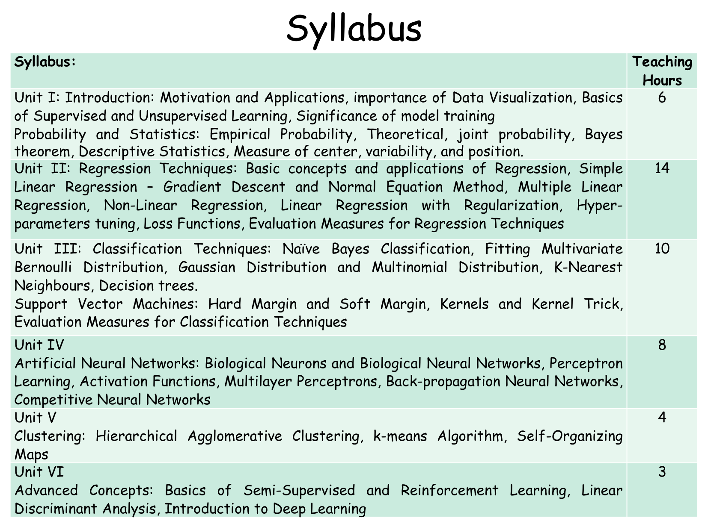
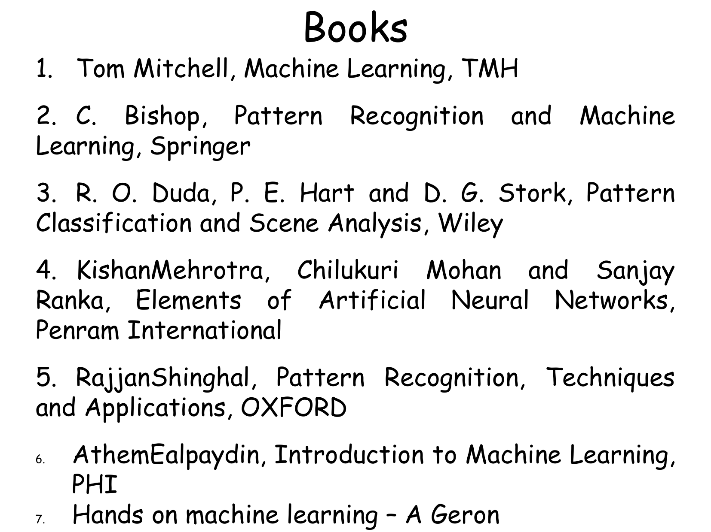
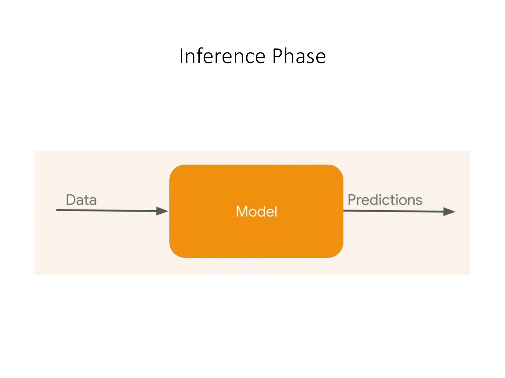
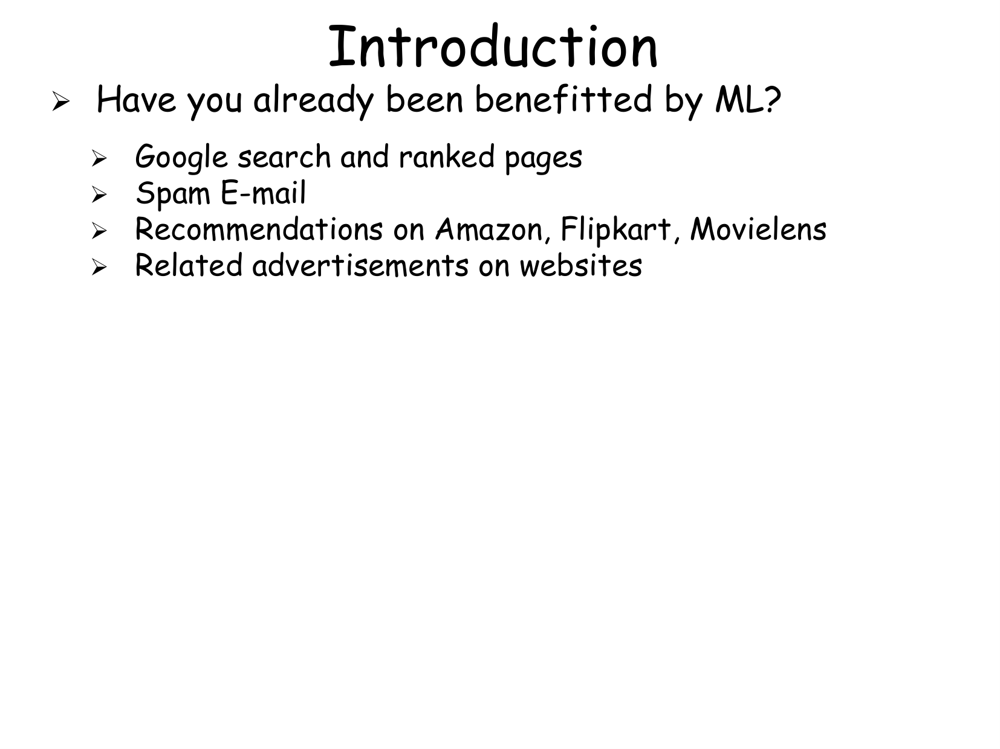
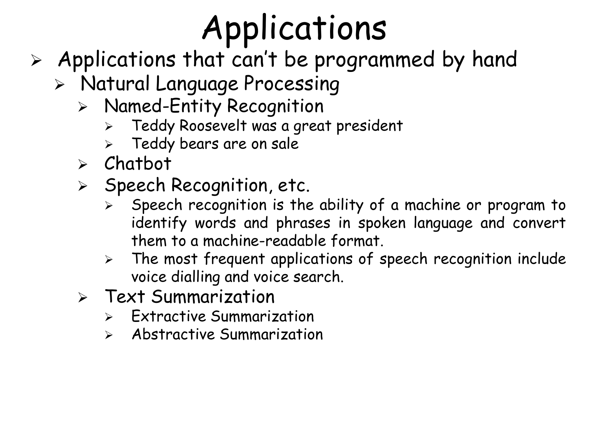
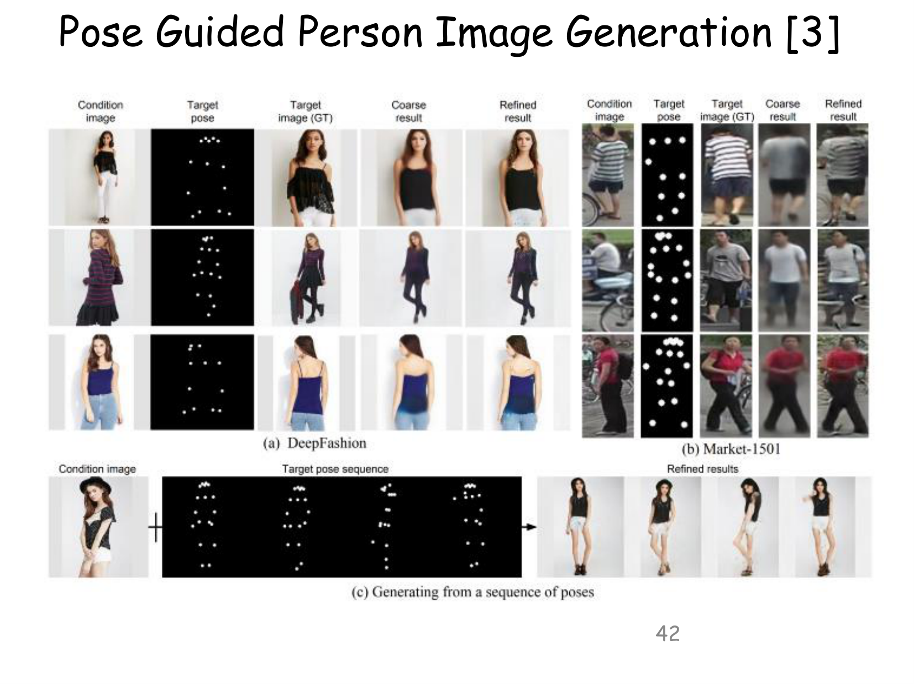
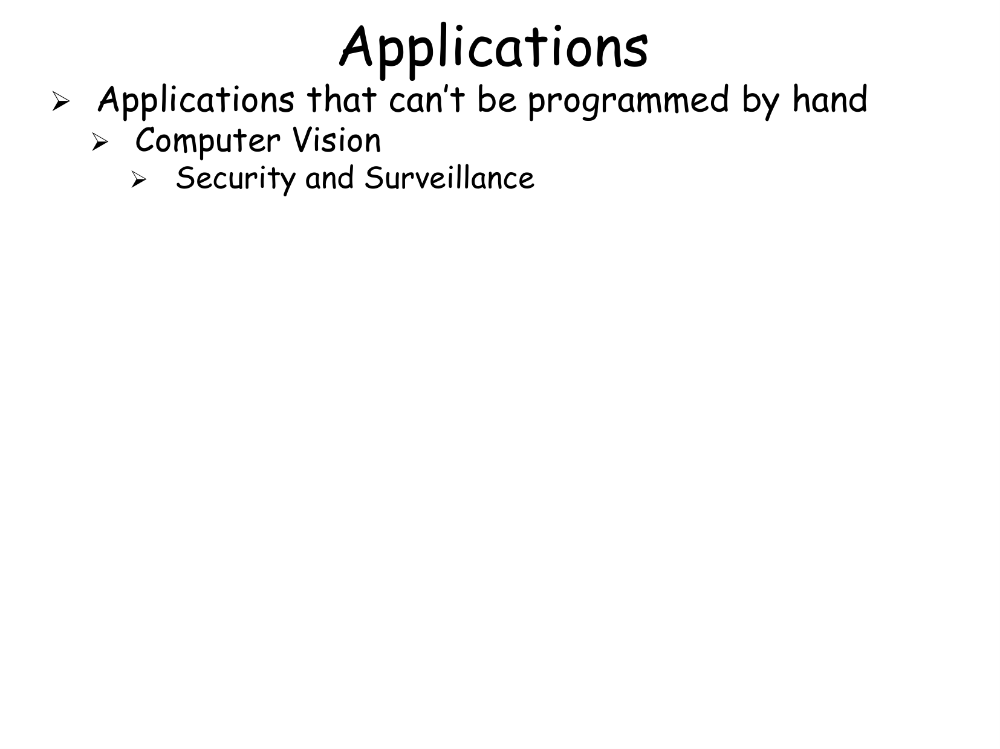
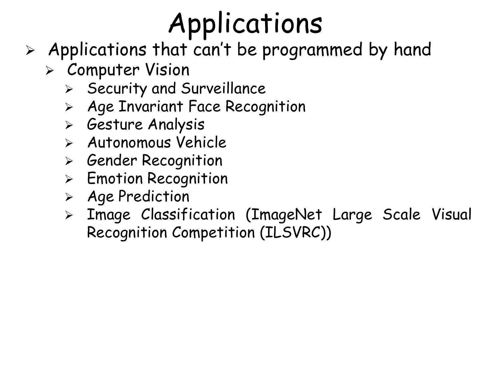
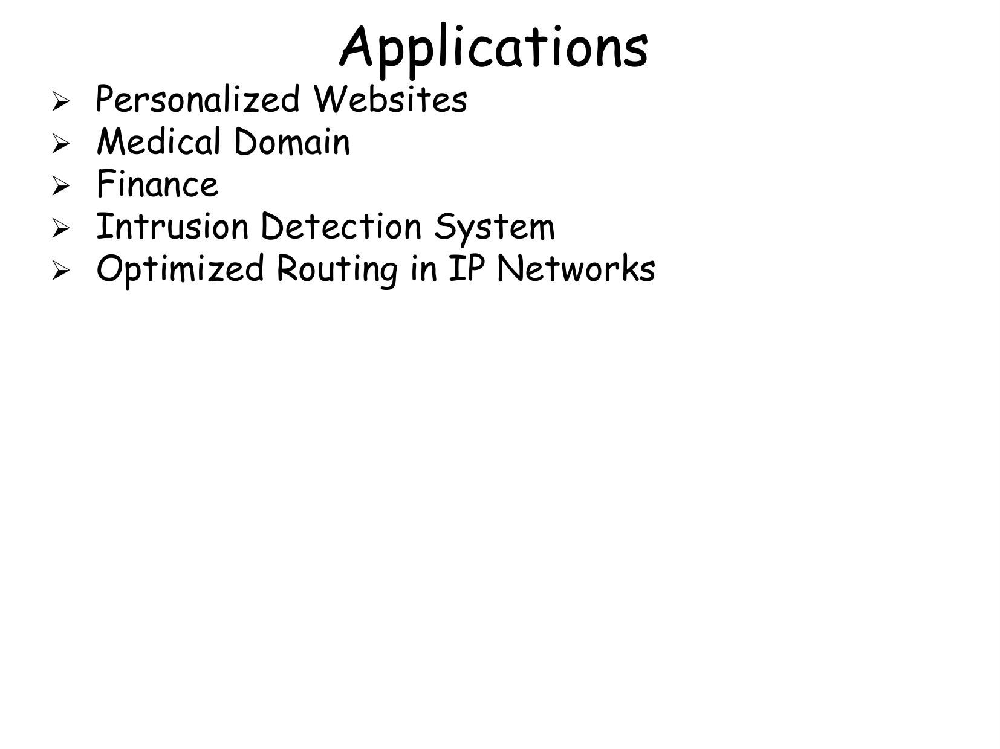
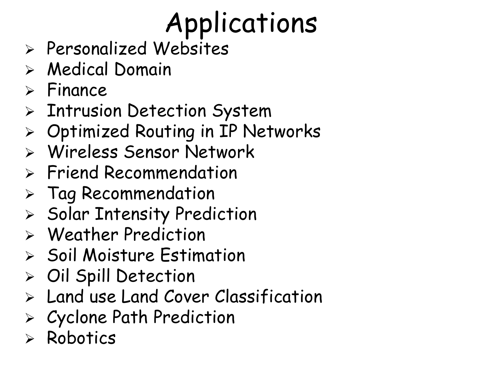

Chapter: Introduction to Machine Learning & Applications¶
1. Introduction and Foundations¶
[Source: 1Machine Learning and its Applications.pdf, Slide 1-12]
1.1 What is Machine Learning?¶
Machine Learning (ML) is a branch of artificial intelligence concerned with building systems that automatically learn and improve from experience without being explicitly programmed.
Formal Definition (Tom Mitchell, 1997):¶
"A computer program is said to learn from experience \(E\) with respect to some class of tasks \(T\) and performance measure \(P\), if its performance at tasks in \(T\), as measured by \(P\), improves with experience \(E\)."


2. Taxonomy of Machine Learning Paradigms¶
[Source: 1Machine Learning and its Applications.pdf, Slide 13-35]
Machine learning algorithms are categorized into four major paradigms:
flowchart TD
A[Machine Learning Paradigms] --> B[Supervised Learning]
A --> C[Unsupervised Learning]
A --> D[Semi-Supervised Learning]
A --> E[Reinforcement Learning]
B --> B1[Classification - Discrete Outputs]
B --> B2[Regression - Continuous Outputs]
C --> C1[Clustering - Grouping Data]
C --> C2[Dimensionality Reduction - PCA/TSNE]
C --> C3[Density Estimation]
E --> E1[Agent, Environment, State, Action, Reward]2.1 Comparison of ML Paradigms¶
| Feature | Supervised Learning | Unsupervised Learning | Semi-Supervised Learning | Reinforcement Learning |
|---|---|---|---|---|
| Input Data | Labeled \((x^{(i)}, y^{(i)})\) | Unlabeled \(x^{(i)}\) | Small Labeled + Large Unlabeled | State \(s_t\), Reward \(r_t\) feedback |
| Primary Goal | Map \(x \to y\) for accurate predictions | Discover hidden patterns/structure | Improve mapping using unlabeled data | Learn optimal action policy $\pi(a |
| Key Sub-types | Classification, Regression | Clustering, Dimensionality Reduction | Semi-supervised Classification | Q-Learning, Policy Gradients |
| Benchmark Tasks | Spam detection, House pricing | Customer segmentation, PCA | Medical imaging with few labels | Game playing (Chess, Go), Robotics |


3. Detailed Breakdown of Learning Paradigms¶
[Source: 1Machine Learning and its Applications.pdf, Slide 36-65]
3.1 Supervised Learning: Classification vs. Regression¶
Definition: Classification¶
Predicting a discrete categorical class label \(y \in \{0, 1, \dots, K-1\}\). - Binary Classification: \(y \in \{0, 1\}\) (e.g., Malignant vs Benign tumor, Spam vs Non-Spam email). - Multiclass Classification: \(y \in \{1, 2, \dots, K\}\) (e.g., Digit recognition \(0-9\)).
Definition: Regression¶
Predicting a real-valued continuous quantity \(y \in \mathbb{R}\) (e.g., Stock prices, Housing values, Temperature forecasting).


3.2 Unsupervised Learning Techniques¶
- Clustering (K-Means, Hierarchical): Partitioning data points into \(K\) distinct clusters based on feature similarity metrics (e.g., Euclidean distance \(d(u,v) = \sqrt{\sum (u_i - v_i)^2}\)).
- Dimensionality Reduction (PCA): Projecting high-dimensional data into low-dimensional orthogonal latent space while preserving maximum variance.


4. Real-World Applications & Edge Cases¶
[Source: 1Machine Learning and its Applications.pdf, Slide 66-87]
- Computer Vision & Medical Diagnostics: Tumorous tissue detection, facial identification, automated radiography analysis.
- Natural Language Processing: Machine translation, sentiment evaluation, automated text summarization.
- Autonomous Robotics: Real-time sensor fusion, path planning, self-driving navigation.


5. Definitions and Terms¶
Definition: Supervised Learning¶
A learning paradigm where algorithms construct mapping function \(f: X \to Y\) using training pairs \((x^{(i)}, y^{(i)})\).
Definition: Unsupervised Learning¶
A paradigm where algorithms uncover inherent structure, clustering patterns, or probability density distributions from unlabeled inputs \(x^{(i)}\).
Definition: Reinforcement Learning¶
A framework where an autonomous agent interacts with an environment, learning action selection policy \(\pi(a|s)\) to maximize cumulative scalar reward \(R = \sum_{t=0}^{\infty} \gamma^t r_t\).
6. Formula Sheet¶
| Concept | Mathematical Equation |
|---|---|
| Mitchell's ML Definition | \(P(\text{Task } T \text{ with Experience } E) \uparrow\) |
| Binary Classification | \(y \in \{0, 1\}\) |
| Continuous Regression | \(y \in \mathbb{R}\) |
| Euclidean Distance Metric | \(d(\mathbf{x}^{(a)}, \mathbf{x}^{(b)}) = \sqrt{\sum_{j=1}^n (x_j^{(a)} - x_j^{(b)})^2}\) |
| Cumulative Discounted Reward | \(R_t = \sum_{k=0}^{\infty} \gamma^k r_{t+k+1} \quad (0 \le \gamma < 1)\) |
7. Exam-Oriented Review¶
7.1 Potential Exam Questions¶
- Define Machine Learning according to Tom Mitchell and identify the three components \((T, E, P)\) for a Checkers-playing agent.
-
Solution: Definition: A computer program learns from experience \(E\) regarding task \(T\) and performance measure \(P\) if \(P\) improves with \(E\).
- Task \(T\): Playing Checkers.
- Experience \(E\): Playing thousands of self-play Checkers games.
- Performance Measure \(P\): Percentage of games won against opponent pool.
-
Differentiate between Classification and Regression with concrete examples.
- Solution: Classification predicts discrete class labels (e.g., predicting whether a transaction is Fraudulent (\(1\)) or Legitimate (\(0\))). Regression predicts continuous numerical quantities (e.g., predicting exact fraudulent loss amount in dollars).
7.2 Numerical Problem & Step-by-Step Solution¶
Problem: Calculate Euclidean distance between two data instances \(\mathbf{x}^{(1)} = [2, 5, 8]^T\) and \(\mathbf{x}^{(2)} = [5, 1, 8]^T\).
Solution: